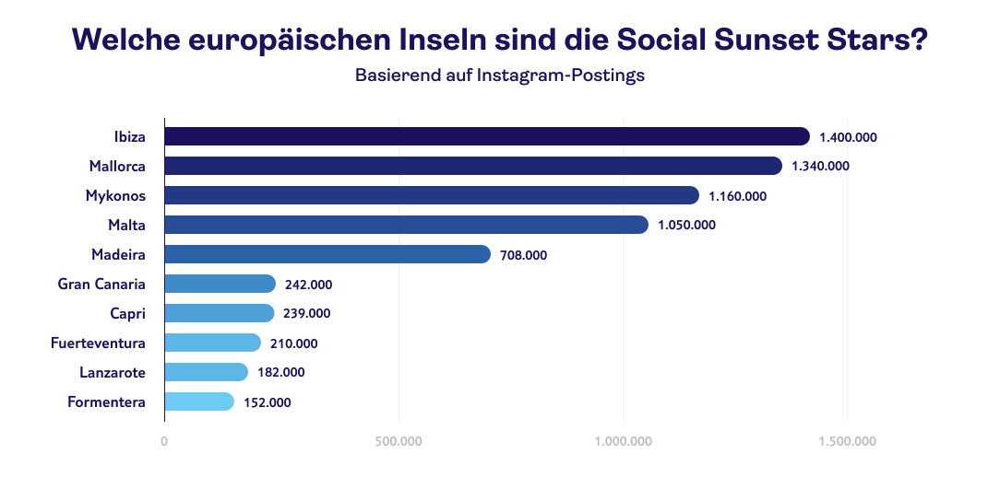
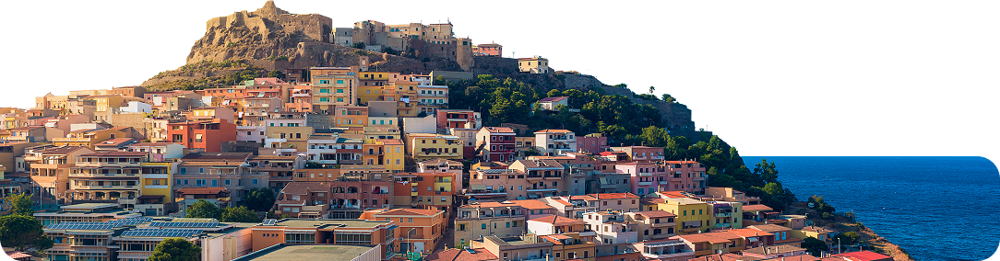
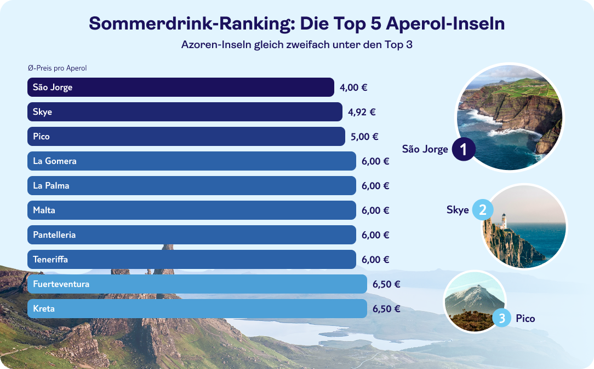
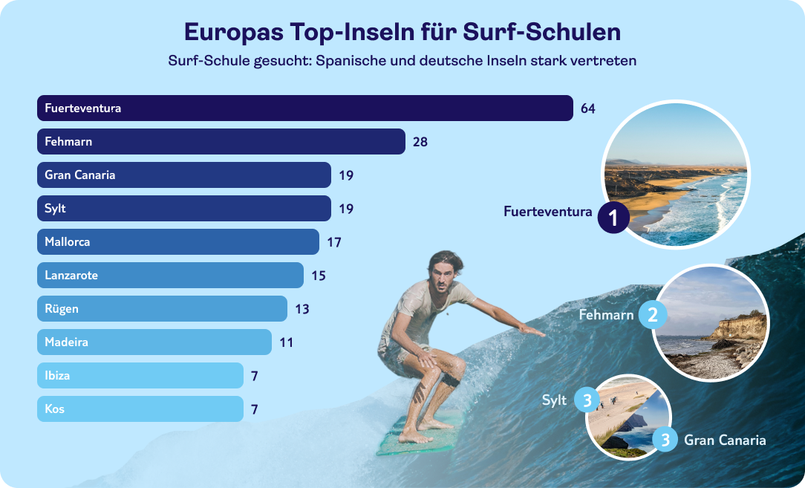
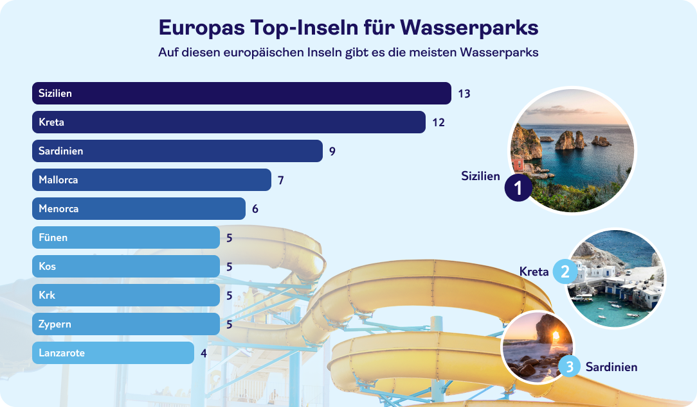
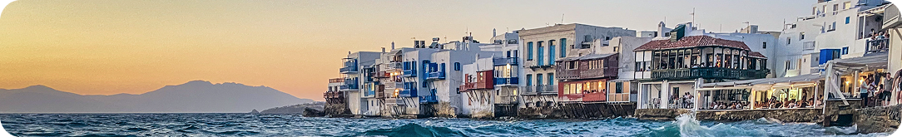

Wer an Inselurlaub denkt, spürt mehr als nur Sonne und Sand: das Gefühl, dem Alltag den Rücken zu kehren, begleitet vom Rauschen der Wellen, einer frischen Brise und dem Versprechen unter Palmen, neue Dinge zu entdecken. Für dieses Inselerlebnis musst du nicht mal ans andere Ende der Welt reisen: Egal, ob du lieber durch grüne Täler wanderst, entlang schroffer Küstenpfade spazierst oder dich von kleinen Tavernen, Wochenmärkten und dem entspannten Inselleben treiben lässt – Europas Inselwelt ist so vielseitig wie die Menschen, die sie bereisen.
Genau diese Vielfalt zeigen wir im großen TUI Insel-Ranking: mit 75 Insel-Destinationen, die direkt Lust machen, den nächsten Urlaub im Kopf zu planen. Lass dich inspirieren und entdecke die europäische Insel, die am besten zu dir und deinen Urlaubsvorlieben passt.
75 Inseln im Vergleich: Die besten Orte für Sonne, Strand und Sundowner
Das TUI Insel-Ranking 2026 ist dein Kompass durch Europas Inselwelt: Auf einen Blick siehst du, wo Sonnenuntergänge so eindrucksvoll sind, dass sie bereits millionenfach auf Instagram geteilt wurden, wo dich die meisten ausgezeichneten Strände erwarten und welche Ziele mit Wasserparks, Beach Bars und jeder Menge Outdoor-Erlebnissen punkten. Ob du also nach entspanntem Insel-Vibe suchst, nach Action auf dem Wasser oder nach dem perfekten Mix aus Genuss, Natur und Nightlife:Die Kriterien helfen dir dabei, genau die Destination zu finden, die zu deinem Urlaubsstil passt.
Tipp: Klickst du im Ranking ein Kriterium an, kannst du die
Inseln außerdem gezielt nach deinem Fokus sortieren.

Das große TUI Insel-Ranking: 75 Top-Destinationen
Für das TUI Insel-Ranking 2026 haben wir 75 europäische Insel-Destinationen berücksichtigt, die genügend verlässliche Daten für unsere Kategorien liefern. Sehr große Inselstaaten (wie zum Beispiel Großbritannien) wurden bewusst ausgeklammert, um vergleichbar zu bleiben. Nord- und Ostseeinseln sind dagegen als spannende Nahziele mit dabei. Die Werte im Index stammen aus einer Mischung aus internationalen Reports und öffentlich verfügbaren Datenquellen: Der World Happiness Score orientiert sich am World Happiness Report, Blue-Flag-Strände an der internationalen Blue-Flag-Auszeichnung. Infrastruktur- und Lifestyle-Kategorien wie Wasserparks, Bars sowie Surf-/Wassersport-Schulen wurden über Einträge auf Google Maps erfasst, Outdoor-Aktivitäten anhand der gelisteten Angebote auf Tripadvisor. Für den Social Sunset Score haben wir die Instagram-Hashtag-Kombination „#[Inselname] #sunset“ ausgewertet. Ergänzend fließt ein KI-gestützter Paradise Score ein, der den Gesamteindruck einer Insel (u. a. Natur, Ästhetik, Ruhe, Vibe, Infrastruktur und Reisezeit-Aspekte) heuristisch bündelt.
*Aufgrund der Lage innerhalb Deutschlands mit voller Punktzahl bewertet
TUI Insel-Ranking: Die 3 europäischen Top-Inseln nehmen
Top-Preise, Traumstrände jede Menge zu erleben: Unsere Top-3-Inseln bieten die perfekten Voraussetzungen für deinen nächsten Traumurlaub:
Platz 1:
Kreta (Griechenland)
Inselklassiker mit Wasseraction &
Paradies-Vibes
- Gesamt-Score: 67/100
- Wasserparks: 12
- Blue Flag Beaches: 150
- Direktflug: ja
- Anzahl der Bars: 753
- Aperol-Spritz-Preis: 6,50 €
- Outdoor-Aktivitäten: 2.000
- World Happiness Score: 5,776
Platz 2:
Sizilien (Italien)
Hochburg der Wasserpark-
Angebote
- Gesamt-Score: 67/100
- Wasserparks: 12
- Blue Flag Beaches: 150
- Direktflug: ja
- Anzahl der Bars: 753
- Aperol-Spritz-Preis: 6,50 €
- Outdoor-Aktivitäten: 2.000
- World Happiness Score: 5,776
Platz 3:
Sardinien (Italien)
Pittoreske Küsten mit zahllosen
Strand-Optionen
- Gesamt-Score: 67/100
- Wasserparks: 12
- Blue Flag Beaches: 150
- Direktflug: ja
- Anzahl der Bars: 753
- Aperol-Spritz-Preis: 6,50 €
- Outdoor-Aktivitäten: 2.000
- World Happiness Score: 5,776
Romantik pur: Diese Inseln sind die Social Sunset Stars
Sonnenuntergänge am Strand zählen zu den beliebtesten Fotomotiven von Urlaubern. Auf Instagram und Co. werden die romantischen Postkartenmotive millionenfach geteilt. Dass dies ein durchaus relevanter Faktor bei der Reiseplanung ist, zeigte sich bei einer 2025 durchgeführten TUI-Studie: 61 % der Befragten gaben hier an, die „Instagrammability“ sei ihnen wichtig bei der Wahl ihrer Urlaubsdestination.
Doch welche europäische Insel hat hier die Nase vorn? Sie trägt nicht ohne Grund den Spitznamen Sonneninsel: Ibiza ist mit 1,4 Millionen Posts das Top-Ziel für romantische Sundowner-Momente. Mallorca folgt knapp dahinter mit 1,34 Millionen. Ebenfalls weit vorne liegen Mykonos (1,16 Mio.), Malta (1,05 Mio.) und Madeira (708 Tsd.). Insbesondere frischverliebte Paare finden auf diesen Inseln viele Spots für Zweisamkeit während der Golden Hour.
Für den Social Sunset Score haben wir die Häufigkeit der Hashtags #[Inselname] + #sunset auf Instagram im Februar 2026 ausgewertet.

Urlaub im Glas: Auf diesen Inseln gibt’s den günstigsten Aperol
Er gehört zu den beliebtesten Sommerdrinks der Deutschen: der Aperol Spritz. Und auch im Urlaub genehmigen sich viele gerne das ein oder andere Glas des leuchtend orangefarbenen Aperitifs. Für unser Aperol Ranking haben wir deshalb verglichen, auf welchen Inseln der Klassiker besonders budgetfreundlich bleibt.
Am günstigsten ist der Aperol auf der portugiesischen Insel São Jorge mit 4,00 €. Wer besonders auf Preis-Leistung achtet, findet hier also die besten Voraussetzungen für einen entspannten Sundowner-Abend, ohne dass der zweite Drink gleich zur Rechenaufgabe wird. Ebenfalls preiswert sind Skye (Schottland) mit 4,92 € und Pico (Portugal) mit 5,00 €.

Das Ranking basiert auf manueller Google-Maps-Recherche (Menüs/Fotos/Preisangaben). Pro europäischer Insel wurden mehrere Bars an zentralen Orten ausgewählt und jeweils der Aperol-Spritz-Preis erfasst. Der Wert je Insel entspricht einem gerundeten Mittelwert der gefundenen Preise. Google-Maps-Daten können je nach Sichtbarkeit/Aktualität variieren, wodurch kein Anspruch auf Vollständigkeit besteht (Stand: Februar/2026).
Rutschen- & Wellen-Check: Wo Wasser-Action und
Abwechslung zusammenkommen
Die Werte basieren auf Google Maps. Pro europäischer Insel wurden mit dem einheitlichen Suchbegriff „Surf-, Windsurf- und Kitesurf-Schulen” die gelisteten Anbieter ausgewertet. Anschließend haben wir die Anzahl eindeutiger Surf-Schul-Listings je Insel ermittelt. Google-Maps-Daten können je nach Sichtbarkeit/Aktualität variieren, wodurch kein Anspruch auf Vollständigkeit besteht (Stand: Februar/2026).
Top-Inseln mit den meisten Surf-Schulen: Deutsche Inseln 2x unter den Top 5
Ein guter Surf-Spot ist das eine – aber um surfen zu lernen, braucht es eine gute Auswahl an Surf-Schulen: Kursplatz finden, Material leihen, loslegen. Genau hier sticht Fuerteventura mit 64 Surf-, Windsurf- und Kitesurf-Schulen heraus. Auf den Plätzen folgen Fehmarn (28), Gran Canaria (19) und Sylt (19). Auch Mallorca ist mit 17 Schulen vorne dabei.

Die Werte basieren auf Google Maps. Pro europäischer Insel wurden mit dem einheitlichen Suchbegriff „Surf-, Windsurf- und Kitesurf-Schulen” die gelisteten Anbieter ausgewertet. Anschließend haben wir die Anzahl eindeutiger Surf-Schul-Listings je Insel ermittelt. Google-Maps-Daten können je nach Sichtbarkeit/Aktualität variieren, wodurch kein Anspruch auf Vollständigkeit besteht (Stand: Februar/2026).
Extra-Fun am Wasser: Top Inseln mit den meisten Wasserparks
Wenn du während deines Insel-Abenteuers auch Lust auf Rutschen, Strömungskanäle und weitere Aqua-Aktivitäten hast, lohnt sich der Blick auf Wasserparks. Sizilien liegt mit 13 Wasserparks vorn, dicht gefolgt von Kreta (12). Ebenfalls stark: Sardinien mit 9 Wasserparks. Auf den Balearen punkten Mallorca (7) und Menorca (6) – Wasserparks bieten eine tolle Kombi für Familien und alle, die Strandtage gern um ein Action-Upgrade ergänzen.

Die Werte basieren auf Google Maps. Pro europäischer Insel haben wir via Google Maps die gelisteten Einrichtungen gezählt. Google-Maps-Daten können je nach Sichtbarkeit/Aktualität variieren, wodurch kein Anspruch auf Vollständigkeit besteht (Stand: Februar/2026).

Europas Top-Inseln im TUI-Ranking
Ob du den Abend am liebsten mit einem Sundowner in der Beach Bar ausklingen lässt oder tagsüber möglichst viel Zeit auf dem Wasser verbringst: Das TUI Insel-Ranking 2026 zeigt, welche europäischen Inseln das beste Gesamtpaket liefern: Von Golden-Hour-Momenten über Preisgefühl am Abend bis hin zu Wasseraction und Abwechslung. Mit Kreta an der Spitze, gefolgt von Sizilien und Sardinien, führen die Inseln das Gesamtranking an, die die beste Mischung aus Erholung und Erlebnispaket liefern.
Welche Insel am besten passt, hängt vor allem davon ab, was dir im Urlaub wichtig ist. Wer dramatische Sonnenuntergänge sucht, findet im Social Sunset Score seine Favoriten in Ibiza oder Mallorca. Hinsichtlich KI-getriebenem Paradise Score liegen Sardinien und Korsika vorn. Die budgetfreundlichsten Sundowner gibt es laut Aperol Ranking auf São Jorge. Wenn du Wasser-Spaß suchst, sind Fuerteventura mit den meisten Surf-Schulen und Sizilien mit den meisten Wasserparks die Erstplatzierten.
Quellen:
TUI-Studie 2026
“Global Gender Gap Report 2025” des World Economic Forum: www.weforum.org/publications/global-gender-gap-report-2025/